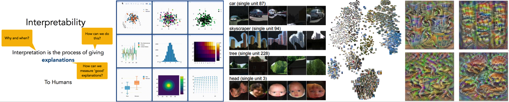

AAAI-19 Workshop onNetwork Interpretability for Deep Learning |

This workshop aims to bring together scientists, engineers, students in both academic and industrial communities who concern themselves about the interpretability of deep learning techniques and, more importantly, the safety of applying these techniques in real life use cases including medical diagnosis and autonomous driving. Ultimately efforts along this direction are expected to open the black box of deep neural networks and lead to interpretable knowledge representations. The main theme of the workshop discussion, therefore, is to build up consensus in this emerging field, and in particular, to clarify the motivation, typical methodologies, prospective trends, and potential industrial applications of boosted interpretability of neural networks.
We are calling for extended abstracts with 2—4 pages to be showcased at a poster session along with short talk spotlights. We are also accepting full submissions with 6—8 pages which will not be included in the Proceedings of AAAI 2019, but we will at the option of the authors provide a link to the relevant arXiv submission.
Please submit workshop papers to networkinterpretability@gmail.com
Submission deadline: November 5, 2018
Notification date: November 26, 2018
Please contact Quanshi Zhang if you have question.